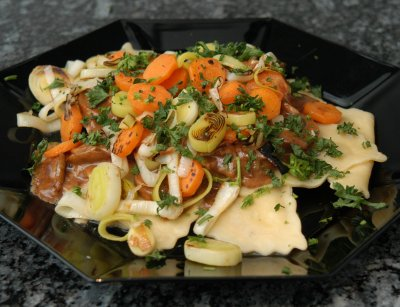

| Zutaten für 4 Personen: | |
| 150 g | Champignons |
| 1 | Zwiebel |
| 1 | Karotte |
| 1 Stück | Sellerie |
| 1 | Lauchstengel |
| 650 g | frische Pilz- Ravioli |
| Salz | |
| 20 g | Butter |
| 2.5 dl | Rahm |
| 1 Tl | Instant Bratensauce (Tube) |
| grober Pfeffer | |
| 1 Bund | Petersilie |
Champignons blättrig schneiden, Zwiebel hacken, Gemüse in Streifen schneiden.
Ravioli gemäss Packungsangabe zubereiten.
Champignons und Zwiebel in Butter dünsten, Rahm und Bratensauce beifügen und würzen.
Gemüsestreifen überwellen.
Ravioli anrichten, mit Sauce überziehen, Gemüse darauf geben und mit Petersilie garnieren.
Migros Restaurant, 2.-7. März 1992.
Sehr einfach und absolut lecker! (Habe allerdings das Gemüse-Zeug weggelassen denn was "überwellen" sein soll habe ich keine Ahnung...) RE, 12.3.2000
Habe immer noch keinen Plan was das mit dem Überwellen soll aber im Wok gebraten kam das auch gut. Schmeckt sehr fein. RE 15.2.2010
@LINKBACK_TAG@ @WAKELOCK@